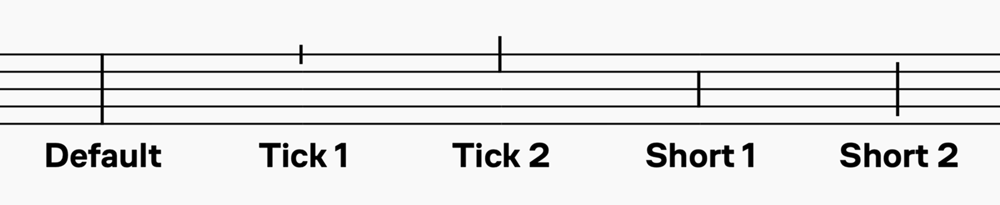
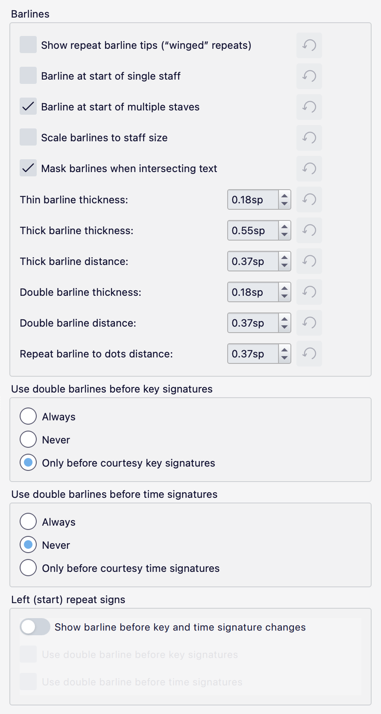

小节线
小节线面板包含一整套常见的小节线。

添加双小节线及其他特殊小节线
更改所有谱表的小节线类型
- 选中一个或多个谱表中的小节线。
- 在面板中单击所需的小节线。
或者，你也可以将小节线从面板拖到乐谱中的小节线上。
更改会自动应用到乐谱中同一位置上的所有小节线。
更改单个谱表的小节线类型
- 在乐谱中选中一条或多条小节线。
- 按住 Ctrl（Mac：Cmd），然后在面板中单击所需的小节线。
或者，你可以按住 Ctrl（Mac：Cmd）并将小节线从面板拖到乐谱中的小节线上。
使用此修饰键时，只会影响被选中的小节线。
添加小节中部的小节线
- 选中一个音符或休止符（或作为列表选择选中多个）。
- 在面板中单击一条小节线。
这会在每个选中音符之后添加一条标记性小节线。该小节线仅用于视觉目的，不参与任何小节操作。
如果你想划分一个小节，并在此过程中插入一条真正的小节线，请参阅拆分小节。
更改小节线长度
这里我们关注的是小节线在垂直方向上的延伸，以便将谱表连接起来，或缩短它们以创建局部小节线。
延伸某谱表中的所有小节线
- 在“起始”（最上方）谱表上选中一条小节线。
- 执行以下任一操作： * 向下拖动末端控制柄，直到它到达目标谱表（此方法最适合让小节线延伸穿过多个谱表）。 * 选中编辑控制柄并按下 Down。 * 在属性面板的小节线部分勾选跨越到下一谱表复选框，然后点击设为谱表默认值。
- 如有需要，对后续谱表重复此操作。
小节线会吸附到位，该谱表中所有其他小节线也会随之变化。
延伸谱表中被选中的小节线
- 选中一条或多条小节线（如果需要连接两个以上谱表，还要选中下方谱表中与之对应的小节线）。
- 在属性面板的小节线部分勾选跨越到下一谱表。
创建局部小节线
局部小节线可以通过在属性面板的小节线部分调整起始跨度和终止跨度来创建。
仅在谱表之间创建小节线（Mensurstrich）
请参阅使用 Mensurstrich。
小节线属性
你可以在属性面板的小节线部分编辑小节线特有的属性：
- 样式：小节线类型（单线、双线、虚线、终止线等）。
- 跨越到下一谱表：如果勾选，小节线将被延伸以到达下方相邻谱表。
- 起始跨度：小节线顶端的垂直位置。
- 终止跨度：小节线底端的垂直位置。
起始跨度设置是相对于谱表顶线的偏移量。与 MuseScore Studio 中大多数其他垂直定位设置一样，正值向下移动，负值向上移动。
终止跨度设置的行为取决于是否勾选了跨越到下一谱表。如果未勾选，它是相对于谱表底线的偏移量。如果勾选，小节线将向下延伸，以匹配下方谱表上默认小节线顶端的位置（即谱表顶线，或者对于单线谱表而言，是谱表线上方 2sp 处）。例外情况是，在这种情形下偏移量方向相反：正值向上移动，负值向下移动。
单线谱表还有一处更复杂的地方：当起始跨度和终止跨度设置均为 0 时绘制的默认小节线，是从线上方 2sp 画到线下方 2sp。不过跨度偏移量仍然相对于（唯一的那条）谱表线，并且如果未勾选跨越到下一谱表，更改其中一个也会同时应用到另一个（即使它为 0）。
最后，这些偏移量的单位在所有情况下都是半个间（half space）。
设为谱表默认值按钮会将当前选中小节线的所有跨度设置应用到该谱表上的所有小节线。
跨度预设按钮会将某些预设应用到小节线上：

应用预设后，会将起始跨度和终止跨度设置为特定值，并且除默认外，都会禁用跨越到下一谱表。
小节线样式
乐谱中所有小节线的选定属性可以在格式 → 样式 → 小节线中更改：

- 显示反复小节线尖端： 在反复小节线的上方和下方添加“翼状”标记。
- 单谱表开头的小节线： 仅包含一个谱表的系统是否应具有初始系统小节线。
- 多谱表开头的小节线： 包含一个以上谱表的系统是否应具有初始系统小节线。
- 按谱表大小缩放小节线： 谱表尺寸改变时，小节线的粗细是否应随之缩放。
- 与文本相交时遮盖小节线： 当文本跨过小节线时，是否应遮盖小节线。
- 细小节线粗细： “普通”细小节线的粗细。
- 粗小节线粗细： 粗小节线的粗细（例如反复小节线或终止小节线的粗线部分）。
- 粗小节线间距： 反复或终止小节线中粗线与细线之间的距离。
- 双小节线粗细： 双小节线中各线条的粗细。
- 双小节线间距： 双小节线中两条线之间的距离。
- 反复小节线到圆点的距离： 反复小节线最内侧线条与其圆点之间的距离。
- 在调号 / 拍号前使用双小节线： 让你选择是否以及何时在调号或拍号前自动显示双小节线。
- 左侧（起始）反复记号包含以下选项：
- 在调号和拍号变化前显示小节线： 开启后，会在位于左反复记号之前的调号和拍号前额外添加一条小节线。你还可以选择这是否为双小节线。
粗细和距离设置属于那些在更改乐谱音乐字体时可能会自动变化的设置，前提是勾选了样式 → 乐谱 → 根据字体自动加载样式设置（默认勾选）。